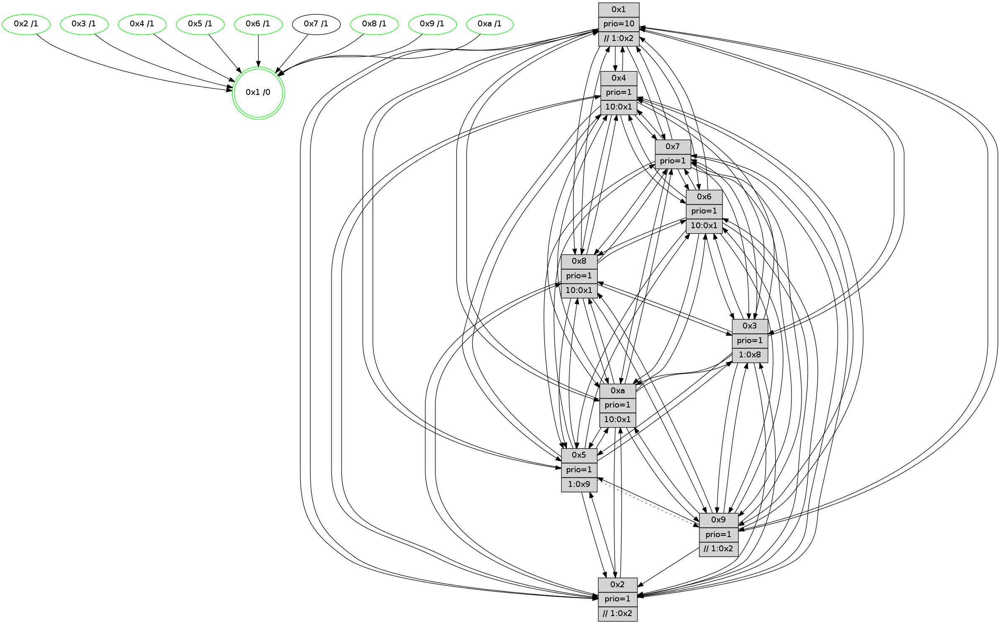

>> << IDX [start] -100 -25 -5 +0 +5 +25 +100 [730.237879992]
 Previous packets
----------------------------------------------------------------------
725.509091 beacon01(faad) #0 coord=01,02,03,04,05,06,07,0a,09,08 cycle=688.0ms assoc
-- color-indic=1 64 03 4b
725.519073 beacon02(faad) #0 coord=01,02,03,04,05,06,07,0a,09,08 cycle=688.0ms assoc 64 90 7a
725.529074 beacon03(faad) #0 coord=01,02,03,04,05,06,07,0a,09,08 cycle=688.0ms assoc 64 ea 37
725.539075 beacon04(faad) #0 coord=01,02,03,04,05,06,07,0a,09,08 cycle=688.0ms assoc 64 9d dd
725.549075 beacon05(faad) #0 coord=01,02,03,04,05,06,07,0a,09,08 cycle=688.0ms assoc 64 e7 90
725.559074 beacon06(faad) #0 coord=01,02,03,04,05,06,07,0a,09,08 cycle=688.0ms assoc 64 69 47
725.569075 beacon07(faad) #0 coord=01,02,03,04,05,06,07,0a,09,08 cycle=688.0ms assoc 64 13 0a
725.579079 beacon0a(faad) #0 coord=01,02,03,04,05,06,07,0a,09,08 cycle=688.0ms assoc 64 62 01
725.589079 beacon09(faad) #0 coord=01,02,03,04,05,06,07,0a,09,08 cycle=688.0ms assoc 64 ec d6
725.599081 beacon08(faad) #0 coord=01,02,03,04,05,06,07,0a,09,08 cycle=688.0ms assoc 64 96 9b
725.610575 [Hello(7): seq=465 sym=2,3,5,6,4,8,9,10,1 sysInfo=hasWarning stat=2:1,13,13,9/3:1,2,9,9/5:15,0,12,12/6:7,14,9,3/4:12,12,4,0/8:9,9,12,5/9:6,9,11,8/10:14,9,13,8/1:11,12,8,1]
725.614264 [Hello(6): seq=465 sym=2,3,5,4,7,9,8,10,1 sysInfo= stat=2:12,2,15,7/3:2,4,7,7/5:4,15,8,10/4:5,6,6,0/7:13,11,4,1/9:6,1,8,6/8:4,2,9,6/10:10,11,0,7/1:2,3,6,1]
725.617300 [Hello(3): seq=465 sym=1,7,6,2,4,8,9,10,5 sysInfo= stat=1:11,4,10,1/7:13,9,5,2/6:15,11,0,8/2:2,10,6,8/4:9,2,4,5/8:11,9,6,3/9:14,3,11,6/10:3,11,8,6/5:10,9,6,7]
725.620169 [Hello(4): seq=465 sym=5,7,6,2,3,9,8,10,1 sysInfo= stat=5:10,2,7,8/7:0,10,8,2/6:6,12,10,8/2:15,5,4,8/3:12,13,0,5/9:9,12,5,3/8:14,13,8,8/10:7,12,10,7/1:3,13,9,1]
725.623026 [Hello(1): seq=374 sym=4,2,9,5,10,3,8,6,7 sysInfo=coloring-mode-on,ColoringModeRequestCalled stat=4:7,3,6,0/2:3,0,13,9/9:5,8,7,0/5:2,13,8,1/10:12,0,13,8/3:8,15,4,11/8:11,0,1,7/6:7,14,15,7/7:8,5,4,8]
----------------------------------------------------------------------
726.297222 beacon01(faad) #0 coord=01,02,03,04,05,06,07,0a,09,08 cycle=688.0ms assoc
-- color-indic=1 64 bf 4e
726.307204 beacon02(faad) #0 coord=01,02,03,04,05,06,07,0a,09,08 cycle=688.0ms assoc 64 2c 7f
726.317205 beacon03(faad) #0 coord=01,02,03,04,05,06,07,0a,09,08 cycle=688.0ms assoc 64 56 32
726.327203 beacon04(faad) #0 coord=01,02,03,04,05,06,07,0a,09,08 cycle=688.0ms assoc 64 21 d8
726.337205 beacon05(faad) #0 coord=01,02,03,04,05,06,07,0a,09,08 cycle=688.0ms assoc 64 5b 95
726.347206 beacon06(faad) #0 coord=01,02,03,04,05,06,07,0a,09,08 cycle=688.0ms assoc 64 d5 42
726.357204 beacon07(faad) #0 coord=01,02,03,04,05,06,07,0a,09,08 cycle=688.0ms assoc 64 af 0f
726.367210 beacon0a(faad) #0 coord=01,02,03,04,05,06,07,0a,09,08 cycle=688.0ms assoc 64 de 04
726.387210 beacon08(faad) #0 coord=01,02,03,04,05,06,07,0a,09,08 cycle=688.0ms assoc 64 2a 9e
726.402257 [Color(6) seq=119 @0:0 prio=1 >10.@1,1.@8,1.@9,1.@a]
726.404106 [Color(4) seq=95 @0:0 prio=1 >10.@1,1.@2,1.@3,1.@5]
726.405983 [Hello(8): seq=409 sym=5,2,3,4,7,6,9,10,1 sysInfo=hasWarning stat=5:3,14,9,8/2:14,4,0,2/3:9,7,5,9/4:1,4,6,6/7:11,5,8,6/6:6,9,4,8/9:12,4,9,5/10:9,14,9,6/1:14,7,10,0]
726.408591 [Hello(9): seq=409 sym=3,4,7,6,8,10,1 sysInfo=hasWarning stat=3:7,13,2,8/4:11,8,3,5/7:13,10,10,4/6:8,13,6,6/8:14,12,12,3/10:10,6,8,8/1:9,0,12,1]
726.411802 [Color(9) seq=114 @0:0 prio=1 >>1.@6,1.@7,1.@9]
726.416949 [Hello(2): seq=462 sym=4,5,7,6,3,9,8,10,1 sysInfo=hasWarning stat=4:2,0,4,4/5:2,5,5,1/7:5,1,10,4/6:6,6,8,6/3:5,14,2,3/9:12,3,0,1/8:15,12,0,5/10:6,2,3,5/1:10,2,5,1]
726.419651 [Color(8) seq=132 @0:0 prio=1]
726.420917 [STC(1) #0.69 tree-change,inconsistent-stability,stable,to-color d=0]
726.423112 [Color(2) seq=111 @0:0 prio=1 >>1.@6,1.@7,1.@8]
726.424800 [Color(1) seq=146 @0:0 prio=10 >>1.@8,1.@9,1.@a]
726.426641 [Hello(5): seq=466 sym=7,6,4,3,1,8,10,2 asym=9 sysInfo=hasWarning stat=7:11,5,9,4/6:10,4,8,7/4:6,12,15,5/3:11,11,1,6/1:11,5,10,1/8:10,7,0,5/10:0,13,7,6/2:9,6,3,0/9:3,12,1,0]
726.429373 [Color(3) seq=117 @0:0 prio=1 >1.@7,1.@8,1.@9,1.@a]
726.431104 [Hello(10): seq=398 sym=6,2,3,8,9,5,7,4,1 sysInfo=hasWarning stat=6:0,7,9,3/2:7,6,15,1/3:2,7,14,5/8:13,7,5,7/9:10,5,2,4/5:8,11,4,9/7:13,6,6,3/4:10,5,13,6/1:11,9,13,1]
726.433520 [Color(5) seq=119 @0:0 prio=1 >1.@9,1.@a]
726.436775 [Color(10) seq=97 @0:0 prio=1 >10.@1,1.@2,1.@3,1.@5]
----------------------------------------------------------------------
727.085352 beacon01(faad) #0 coord=01,02,03,04,05,06,07,0a,09,08 cycle=688.0ms assoc
-- color-indic=1 64 8b 56
727.095333 beacon02(faad) #0 coord=01,02,03,04,05,06,07,0a,09,08 cycle=688.0ms assoc 64 18 67
727.105333 beacon03(faad) #0 coord=01,02,03,04,05,06,07,0a,09,08 cycle=688.0ms assoc 64 62 2a
727.115334 beacon04(faad) #0 coord=01,02,03,04,05,06,07,0a,09,08 cycle=688.0ms assoc 64 15 c0
727.125335 beacon05(faad) #0 coord=01,02,03,04,05,06,07,0a,09,08 cycle=688.0ms assoc 64 6f 8d
727.135335 beacon06(faad) #0 coord=01,02,03,04,05,06,07,0a,09,08 cycle=688.0ms assoc 64 e1 5a
727.145336 beacon07(faad) #0 coord=01,02,03,04,05,06,07,0a,09,08 cycle=688.0ms assoc 64 9b 17
727.155340 beacon0a(faad) #0 coord=01,02,03,04,05,06,07,0a,09,08 cycle=688.0ms assoc 64 ea 1c
727.175341 beacon08(faad) #0 coord=01,02,03,04,05,06,07,0a,09,08 cycle=688.0ms assoc 64 1e 86
727.186967 [STC(9)->1 #0.69 tree-change,inconsistent-stability,stable,to-color d=1]
727.188228 [STC(8)->1 #0.69 tree-change,inconsistent-stability,stable,to-color d=1]
727.191492 [Hello(7): seq=466 sym=2,3,5,6,4,8,9,10,1 sysInfo=hasWarning stat=2:2,14,13,9/3:2,3,9,9/5:0,0,12,12/6:8,15,9,3/4:13,13,4,0/8:10,10,12,5/9:7,10,11,8/10:15,10,13,8/1:12,13,9,1]
727.194335 [STC(7)->1 #0.69 tree-change,inconsistent-stability,to-color d=1]
727.196798 [Hello(1): seq=375 sym=4,2,9,5,10,3,8,6,7 sysInfo=coloring-mode-on,ColoringModeRequestCalled stat=4:7,3,6,0/2:3,0,13,9/9:5,8,7,0/5:3,13,8,1/10:13,1,13,8/3:8,0,4,11/8:11,0,1,7/6:7,14,15,7/7:8,5,4,8]
727.199457 [Hello(3): seq=466 sym=1,7,6,2,4,8,9,10,5 sysInfo= stat=1:12,4,10,1/7:13,9,5,2/6:15,11,0,8/2:2,10,6,8/4:10,2,4,5/8:11,9,6,3/9:14,3,11,6/10:4,12,8,6/5:10,9,6,7]
727.203413 [Hello(4): seq=466 sym=5,7,6,2,3,9,8,10,1 sysInfo= stat=5:11,2,7,8/7:0,10,8,2/6:6,12,10,8/2:0,6,4,8/3:12,14,0,5/9:10,13,5,3/8:15,14,8,8/10:8,13,10,7/1:4,14,10,1]
727.207826 [STC(4)->1 #0.69 tree-change,inconsistent-stability,stable,to-color d=1]
727.211654 [Hello(6): seq=466 sym=2,3,5,4,7,9,8,10,1 sysInfo= stat=2:13,3,15,7/3:3,5,7,7/5:5,15,8,10/4:6,7,6,0/7:13,11,4,1/9:7,2,8,6/8:5,3,9,6/10:11,12,0,7/1:3,4,7,1]
727.214778 [STC(6)->1 #0.69 tree-change,inconsistent-stability,stable,to-color d=1]
----------------------------------------------------------------------
727.873484 beacon01(faad) #0 coord=01,02,03,04,05,06,07,0a,09,08 cycle=688.0ms assoc
-- color-indic=1 64 37 53
727.883467 beacon02(faad) #0 coord=01,02,03,04,05,06,07,0a,09,08 cycle=688.0ms assoc 64 a4 62
727.893467 beacon03(faad) #0 coord=01,02,03,04,05,06,07,0a,09,08 cycle=688.0ms assoc 64 de 2f
727.903468 beacon04(faad) #0 coord=01,02,03,04,05,06,07,0a,09,08 cycle=688.0ms assoc 64 a9 c5
727.913468 beacon05(faad) #0 coord=01,02,03,04,05,06,07,0a,09,08 cycle=688.0ms assoc 64 d3 88
727.923467 beacon06(faad) #0 coord=01,02,03,04,05,06,07,0a,09,08 cycle=688.0ms assoc 64 5d 5f
727.933467 beacon07(faad) #0 coord=01,02,03,04,05,06,07,0a,09,08 cycle=688.0ms assoc 64 27 12
727.943473 beacon0a(faad) #0 coord=01,02,03,04,05,06,07,0a,09,08 cycle=688.0ms assoc 64 56 19
727.963472 beacon08(faad) #0 coord=01,02,03,04,05,06,07,0a,09,08 cycle=688.0ms assoc 64 a2 83
727.977788 [Color(3) seq=118 @0:0 prio=1 >1.@7,1.@8,1.@9,1.@a]
727.979619 [Hello(10): seq=399 sym=6,2,3,8,9,5,7,4,1 sysInfo=hasWarning stat=6:1,7,10,3/2:7,6,15,1/3:3,7,14,5/8:13,7,6,7/9:10,5,3,4/5:8,12,4,9/7:14,6,7,3/4:11,5,14,6/1:12,9,13,1]
727.982606 [Color(4) seq=96 @0:0 prio=1 >10.@1,1.@2,1.@3,1.@5]
727.984366 [Color(10) seq=98 @0:0 prio=1 >10.@1,1.@2,1.@3,1.@5]
727.986218 [Color(1) seq=147 @0:0 prio=10 >>1.@2,1.@3,1.@5]
727.991173 [Color(6) seq=120 @0:0 prio=1 >10.@1,1.@8,1.@9,1.@a]
727.994144 PARSE ERROR************************
Traceback (most recent call last):
File "PacketAnalysis.py", line 167, in showOperaPacket
structPacket = OperaPacketParse.parsePacket(rawPacket)
File "../../pkg-python/HipSens/Core/OperaPacketParse.py", line 461, in parsePacket
return parseHelloMessage(data)
File "../../pkg-python/HipSens/Core/OperaPacketParse.py", line 109, in parseHelloMessage
sysInfo,stability,colorInfo = struct.unpack("!HBB", linkList[0:4])
error: unpack requires a string argument of length 4
48 34 08 00 01 9a 00 02 02 12 05 00 02 00 03 00 04 00 07 00 06 00 09 00 0a 00 01 00 53 04 00 02 00 00 4c 12 89 e4 20 5e 95 8a 67 42 69 5c 85 97 59 4c 69 fa 0b 8f 53 18
727.998872 [Color(8) seq=133 @0:0 prio=1 >10.@1,1.@2,1.@3,1.@5]
728.001499 [Hello(9): seq=410 sym=2,5,3,4,7,6,8,10,1 sysInfo=hasWarning stat=2:0,1,0,0/5:0,0,0,0/3:8,14,2,8/4:12,8,4,5/7:14,10,11,4/6:9,13,7,6/8:14,13,13,3/10:11,7,8,8/1:10,1,13,1]
728.004553 [Hello(2): seq=463 sym=4,5,7,6,3,8,10,1 sysInfo=hasWarning stat=4:3,0,5,4/5:3,5,5,1/7:6,1,11,4/6:7,6,9,6/3:6,15,2,3/8:15,12,1,5/10:7,3,3,5/1:11,3,5,1]
728.007786 [Hello(5): seq=467 sym=7,6,4,3,1,8,10,2 asym=9 sysInfo=hasWarning stat=7:12,5,10,4/6:11,4,9,7/4:7,12,0,5/3:12,11,1,6/1:12,5,10,1/8:10,7,1,5/10:0,14,7,6/2:9,6,3,0/9:3,12,2,0]
728.010892 [Color(2) seq=112 @0:0 prio=1 >>1.@2,1.@3,1.@5]
728.013376 [Color(5) seq=120 @0:0 prio=1 >1.@9,1.@a]
728.018147 [Color(9) seq=115 @0:0 prio=1 >>1.@2,1.@3,1.@5]
----------------------------------------------------------------------
728.661615 beacon01(faad) #0 coord=01,02,03,04,05,06,07,0a,09,08 cycle=688.0ms assoc
-- color-indic=1 64 f3 5d
728.671597 beacon02(faad) #0 coord=01,02,03,04,05,06,07,0a,09,08 cycle=688.0ms assoc 64 60 6c
728.681597 beacon03(faad) #0 coord=01,02,03,04,05,06,07,0a,09,08 cycle=688.0ms assoc 64 1a 21
728.691599 beacon04(faad) #0 coord=01,02,03,04,05,06,07,0a,09,08 cycle=688.0ms assoc 64 6d cb
728.701599 beacon05(faad) #0 coord=01,02,03,04,05,06,07,0a,09,08 cycle=688.0ms assoc 64 17 86
728.711598 beacon06(faad) #0 coord=01,02,03,04,05,06,07,0a,09,08 cycle=688.0ms assoc 64 99 51
728.721598 beacon07(faad) #0 coord=01,02,03,04,05,06,07,0a,09,08 cycle=688.0ms assoc 64 e3 1c
728.731602 beacon0a(faad) #0 coord=01,02,03,04,05,06,07,0a,09,08 cycle=688.0ms assoc 64 92 17
728.741602 beacon09(faad) #0 coord=01,02,03,04,05,06,07,0a,09,08 cycle=688.0ms assoc 64 1c c0
728.751604 beacon08(faad) #0 coord=01,02,03,04,05,06,07,0a,09,08 cycle=688.0ms assoc 64 66 8d
728.763189 [Hello(1): seq=376 sym=4,2,9,5,10,3,8,6,7 sysInfo=coloring-mode-on,ColoringModeRequestCalled stat=4:8,3,7,0/2:4,1,13,9/9:6,9,7,0/5:4,14,8,1/10:13,1,13,8/3:9,0,4,11/8:12,1,1,7/6:8,15,0,7/7:8,5,4,8]
728.766733 [Hello(7): seq=467 sym=2,3,5,6,4,8,9,10,1 sysInfo=hasWarning stat=2:3,15,13,9/3:3,4,9,9/5:1,1,12,12/6:9,0,10,3/4:14,14,5,0/8:11,11,12,5/9:8,11,11,8/10:0,11,13,8/1:13,14,9,1]
728.770444 [Hello(3): seq=467 sym=1,7,6,2,4,8,9,10,5 sysInfo= stat=1:12,5,10,1/7:13,9,5,2/6:0,12,1,8/2:3,11,6,8/4:11,3,5,5/8:12,10,6,3/9:15,4,11,6/10:5,13,8,6/5:11,10,6,7]
728.773969 [Hello(4): seq=467 sym=5,7,6,2,3,9,8,10,1 sysInfo= stat=5:12,3,7,8/7:0,10,8,2/6:7,13,11,8/2:1,7,4,8/3:12,14,0,5/9:11,14,5,3/8:0,15,8,8/10:8,14,10,7/1:4,15,10,1]
728.776843 [Hello(6): seq=467 sym=2,3,5,4,7,9,8,10,1 sysInfo= stat=2:14,4,15,7/3:3,5,7,7/5:6,0,8,10/4:6,7,6,0/7:13,11,4,1/9:8,3,8,6/8:6,4,9,6/10:11,12,0,7/1:3,4,7,1]
----------------------------------------------------------------------
729.449747 beacon01(faad) #0 coord=01,02,03,04,05,06,07,0a,09,08 cycle=688.0ms assoc
-- color-indic=1 64 4f 58
729.459730 beacon02(faad) #0 coord=01,02,03,04,05,06,07,0a,09,08 cycle=688.0ms assoc 64 dc 69
729.469730 beacon03(faad) #0 coord=01,02,03,04,05,06,07,0a,09,08 cycle=688.0ms assoc 64 a6 24
729.479729 beacon04(faad) #0 coord=01,02,03,04,05,06,07,0a,09,08 cycle=688.0ms assoc 64 d1 ce
729.489730 beacon05(faad) #0 coord=01,02,03,04,05,06,07,0a,09,08 cycle=688.0ms assoc 64 ab 83
729.499730 beacon06(faad) #0 coord=01,02,03,04,05,06,07,0a,09,08 cycle=688.0ms assoc 64 25 54
729.509731 beacon07(faad) #0 coord=01,02,03,04,05,06,07,0a,09,08 cycle=688.0ms assoc 64 5f 19
729.519736 beacon0a(faad) #0 coord=01,02,03,04,05,06,07,0a,09,08 cycle=688.0ms assoc 64 2e 12
729.539736 beacon08(faad) #0 coord=01,02,03,04,05,06,07,0a,09,08 cycle=688.0ms assoc 64 da 88
729.554207 [Color(1) seq=148 @0:0 prio=10 >>1.@2,1.@3,1.@5]
729.555887 [Color(6) seq=121 @0:0 prio=1 >10.@1,1.@8,1.@9,1.@a]
729.557507 [Color(3) seq=119 @0:0 prio=1 >1.@8,1.@9,1.@a]
729.559305 [Hello(2): seq=464 sym=4,5,7,6,3,8,10,1 sysInfo=hasWarning stat=4:4,0,5,4/5:3,6,5,1/7:7,1,11,4/6:8,6,9,6/3:7,0,2,3/8:15,12,1,5/10:7,3,3,5/1:12,3,5,1]
729.562298 [Color(2) seq=113 @0:0 prio=1 >>1.@2,1.@3,1.@5]
729.564246 [Hello(8): seq=411 sym=5,2,3,4,7,6,9,10,1 sysInfo=hasWarning stat=5:5,15,9,8/2:15,6,0,2/3:11,8,5,9/4:3,4,7,6/7:13,5,9,6/6:8,9,5,8/9:13,5,9,5/10:10,15,9,6/1:0,8,11,0]
729.566923 [Hello(9): seq=411 sym=2,5,3,4,7,6,8,10,1 sysInfo=hasWarning stat=2:0,1,0,0/5:0,0,0,0/3:9,15,2,8/4:13,8,4,5/7:15,10,11,4/6:10,13,7,6/8:14,13,13,3/10:11,7,8,8/1:11,1,13,1]
729.570211 [Color(4) seq=97 @0:0 prio=1 >10.@1,1.@2,1.@3,1.@5]
729.572049 [Hello(5): seq=468 sym=7,6,4,3,1,8,10,2 asym=9 sysInfo=hasWarning stat=7:13,5,10,4/6:12,4,9,7/4:8,12,0,5/3:13,12,1,6/1:13,5,10,1/8:10,7,1,5/10:0,14,7,6/2:9,6,3,0/9:3,13,2,0]
729.575876 [Hello(10): seq=400 sym=6,2,3,8,9,5,7,4,1 sysInfo=hasWarning stat=6:2,8,10,3/2:8,7,15,1/3:4,7,14,5/8:14,8,6,7/9:11,6,3,4/5:9,13,4,9/7:15,6,7,3/4:12,5,14,6/1:13,10,13,1]
729.580143 [Color(8) seq=134 @0:0 prio=1 >10.@1,1.@2,1.@3,1.@5]
729.582979 [Color(10) seq=99 @0:0 prio=1 >10.@1,1.@2,1.@3,1.@5]
729.584868 [Color(9) seq=116 @0:0 prio=1 >>1.@2,1.@3,1.@5]
729.593596 [Color(5) seq=121 @0:0 prio=1 >1.@9,1.@a]